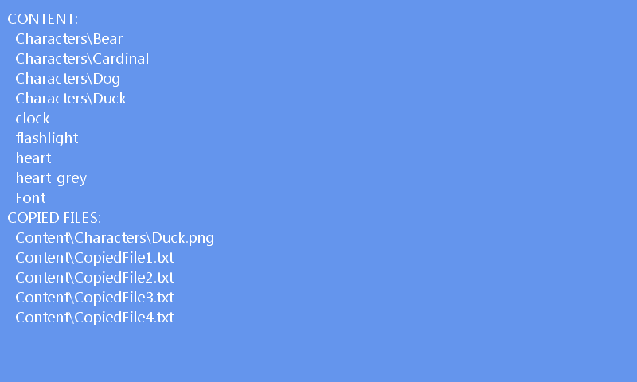

Content Manifest Extensions
Ported from Microsoft's XNA 4.0 Content Manifest Pipeline sample for Windows and Windows Phone.
Source for this sample on GitHub ↗

Play ▸Opens in a new tab. The list is read-only; focus the game and press Escape to close it.
About this sample
The original XNA Content Pipeline extension generates a manifest when the content project is built. The game loads it as a list of strings and separates compiled assets from files copied into the deployment.
The web build uses the exact manifest and deployment content produced by the original XNA pipeline. The sample displays the result; it does not select or open individual entries.
Controls
| Action | Control |
|---|---|
| Close the sample | Escape |